Material Register
You can perform the following in the Material Register Section:
- Search and View the Ledger
- Search and View the Delivery/Supply Details
- Create the Delivery/Supply Details
- Generate the Project Docket
- Search and View the Project Dockets<<Edit function >>
- Search and View the Store/Materials Daily Issue Records
- Search and View the Consumption Records
- Search and View the Store Items Stock OnSite – Intransit
- Search and View the Materials Stock on Site-Stock Piled Items
- Search and View the Request for Material Transfers
- Submit the Request for Material Transfer
- Search the Approval for Material Transfers
- View and Approve/Reject the Request for Material Transfer
Note:
- Click
 or
or  to navigate through the columns.
to navigate through the columns. - Click
 or
or  to navigate through the tabs.
to navigate through the tabs.
This section helps you to search and view the Ledger. In this tab, it will show the Docket and Material details. Supply, Issue, Consumption, Transfer, stock balance, and closing balance details of material items is maintained in this tab.
To search and view the Ledger, do the following.
- Select EPS Name or Project Name, and then select From Date and To date.
- Click Search available on the top right side of the screen.
- The search results are shown on the screen as shown in the figure.
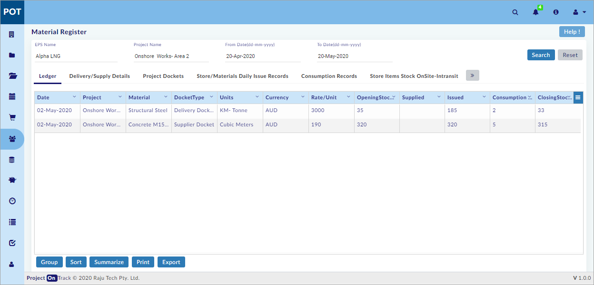
Note:
- Details are not available for the search criteria warning message is shown, if records are not available for the selected project.
- Click Reset to reset the screen to the default view.
- Opening stock Balance: - Closing balance quantity from previous date.
- Supply / Receipts through Supplier Delivery Dockets: - Daily Deliveries in store / stock yard / site and captured through Material Register or through work diary entries.
- Daily Issues through Project Dockets: - Date wise materials issued through Projects dockets.
- Consumption through Work Diaries: - Date wise consumption of materials through work diary in Asbuilt Records Module.
- Issued Balance Stock in Transit: - difference between daily issues and consumption quantity as against each of the Project Docket and Schedule Item ID under each of the Purchase order. In case of External Project Transfer, apply the formula: External Project Transfers - Consumption through Work Diaries.
- External Project Transfers: - Quantity transferred to external projects through requisition and approval process of Material register and using Project dockets. This is filtered quantity for "external projects only".
- Closing stock Balance: - Opening stock Balance + Supply / Receipts through Supplier Delivery Dockets - Daily Issues Through Project Dockets: Date wise, Project wise warehouse / stockyard ,location wise and resource ID wise stock balance available for project use issue.
- On the column headers, click
 and the drop-down menu opens as shown in the figure.
and the drop-down menu opens as shown in the figure.
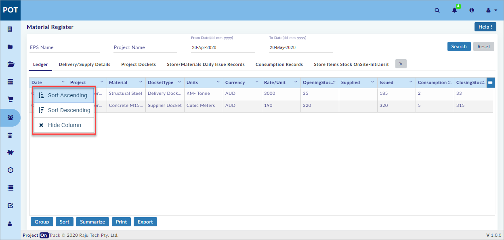
- You can perform the following on the drop-down menu.
- Sort Ascending: Select to sort the records in ascending order
- Sort Descending: Select to sort the records in descending order
- Hide Column: Select to hide the column.
Note:
- After sorting, Remove Sort option is shown on the drop-down menu. Select Remove Sort to remove the sorting.
- You can also click on the column header to toggle between Sort Ascending, Sort Descending, and Remove Sort.
- Click available on the right side of the screen and the drop-down menu opens as shown in the figure.
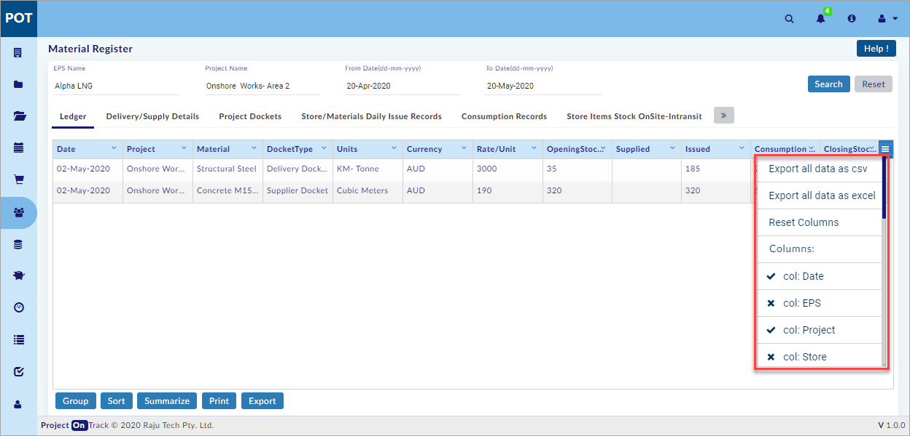
- You can perform the following on the drop-down menu.
- Export all data as csv: Select to export all the ledger data as csv file and download it to your computer.
- Export all data as excel: Select to export all the ledger data as an excel file and download it to your computer.
- Reset Columns: Select to reset the columns to the default view.
- Columns: Select the columns available on the menu to toggle between showing and hiding column(s) as shown in the figure (Use the scroll bar to view more columns).
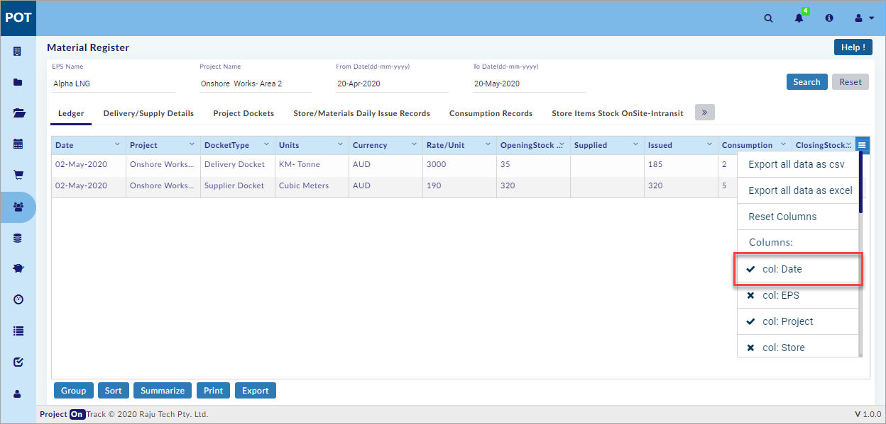
Note:
- is shown in the drop-down menu if a column is shown.
- is shown in the drop-down menu if a column is hidden.
You have successfully searched and viewed the Ledger.
Search and View the Delivery/Supply Details:
This section helps you to search and view the Delivery/Supply Details.
To search and view the Delivery/Supply Details, do the following.
- Select EPS Name or Project Name, and then select From Date and To date.
- Click Search available on the top right side of the screen.
- Select the Delivery/Supply Details tab.
- The search results are shown on the screen as shown in the figure.
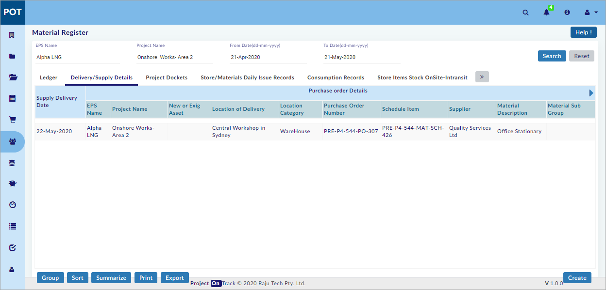
Note:
- Click Reset to reset the screen to the default view.
You have successfully searched and viewed the Delivery/Supply Details.
Create Delivery/Supply Details:
This section helps you to create the Delivery/Supply Details. Material details delivered to site and noted in work diary is seen in this screen.
To create the Delivery/Supply Details, do the following.
- Select the Delivery/Supply Details tab.
- Click
 available on the bottom right side of the screen, and the Purchase Order Details window opens as shown in the figure.
available on the bottom right side of the screen, and the Purchase Order Details window opens as shown in the figure.
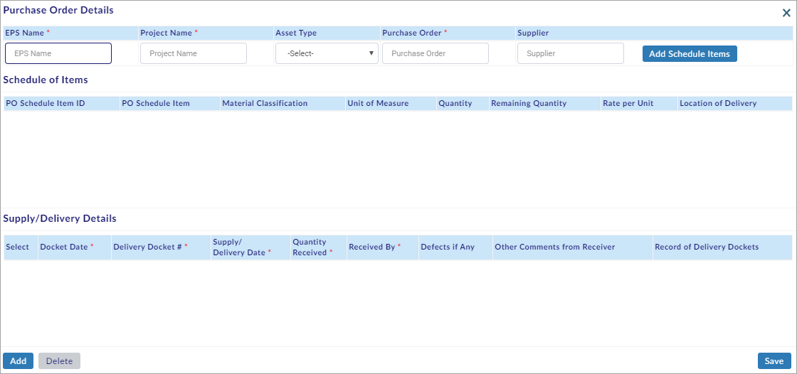
- Select EPS Name or Project Name.
- Select the Asset Type, and then select Purchase Order and the Supplier is auto-filled.
- Click and the Purchase Order Schedule Items window opens.
Note:
- Schedule Items are related to the selected Purchase Order.
- Select the required Schedule Item(s) and then click
 .
. - The selected schedule item(s) are shown on the Schedule of Items sub-window.
- Select a Schedule Item as shown in the figure.
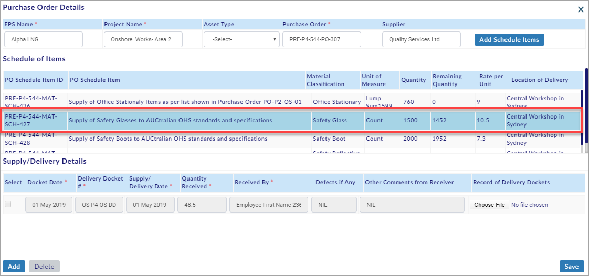
- Click
 to create Single/Multiple Docket(s).
to create Single/Multiple Docket(s). - Enter/select all the mandatory details.
- Click
 to save the Delivery/Supply Details.
to save the Delivery/Supply Details.
Note:
- Select the Docket(s) and click
 to delete Single/Multiple Docket(s).
to delete Single/Multiple Docket(s).
You have successfully created the Delivery/Supply Details.
This section helps you to generate the Project Docket. In this tab, User can generate the project dockets based on the EPS ID/Name.
To generate the Project Docket, do the following.
- Select the Project Docket tab.
- Click and the Generate Project Docket window opens as shown in the figure.
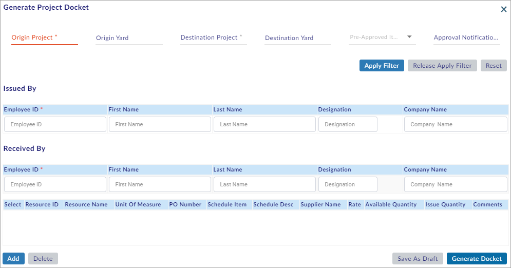
- Select Origin Project, and Origin Yard (with delivery docket existence).
- Select Destination Project, and Destination Yard.
- Select Yes from the Pre-Approved Item drop-down menu, if the selected material is a restricted schedule item in Project Library (or select No from the Pre-Approved Item drop-down menu, if the selected material is non-restricted schedule item in Project Library).
- Select Approval Notification ID (Generated after approval of material transfer), if the selected material is a restricted schedule item.
- Click , and then select Employee ID on the Issued By sub-window and the related fields are auto-filled.
- On the Received By sub-window select Employee ID and the related fields are auto-filled.
Note:
- Apply Filter is used to fetch resources list related to the selected project & warehouse.
- Click Release Apply Filter to release the applied filter.
- Click Reset to reset the fields’ details.
- List of employees related to origin project is displayed in Employee ID on the Issued By sub-window.
- List of employees related to destination project is displayed in Employee ID on the Received By sub-window.
- Click and the Project Schedule Items window opens as shown in the figure.
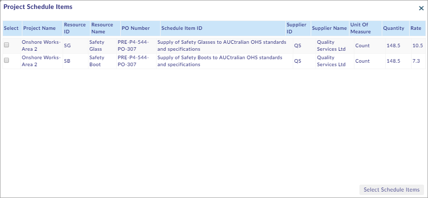
- Select the schedule items and click to add the schedule items.
- Enter the required details.
- Click
 to generate the project docket (or click to save the project docket details as a draft.
to generate the project docket (or click to save the project docket details as a draft.
Note:
- Generated Dockets are seen in Asbuilt Records-Work Dairy—Materials tab and also seen in Resources – Plant & Equipments – Service History & Repairs tab.
- Notifications list generated during approval for material transfer is displayed in Approval Notification ID if Yes is selected from the Pre-Approved Item drop-down menu.
- Select the Record(s) and click
 to delete Single/Multiple Record(s).
to delete Single/Multiple Record(s).
You have successfully generated the Project Docket.
Search and View the Project Dockets:
This section helps you to search and view the Project Dockets.
To search and view the Project Dockets, do the following.
- Select EPS Name or Project Name, and then select From Date and To date.
- Click Search available on the top right side of the screen.
- Select the Project Dockets tab.
- The search results are shown on the screen as shown in the figure.
Note:
- Click Reset to reset the screen to the default view.
- Click and the Generate Project Docket window opens as shown in the figure.
<<Edit function >>
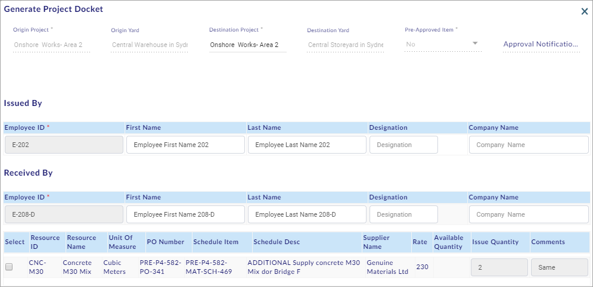
You have successfully searched and viewed the Project Dockets.
Search and View Store/Materials Daily Issue Records:
This section helps you to search and view the Store/Materials Daily Issue Records. Details of Materials issued through project Docket is seen auto-filled in this tab.
To search and view the Store/Materials Daily Issue Records, do the following.
- Select EPS Name or Project Name, and then select From Date and To date.
- Click Search available on the top right side of the screen.
- Select the Store/Materials Daily Issue Records tab.
- The search results are shown on the screen as shown in the figure.
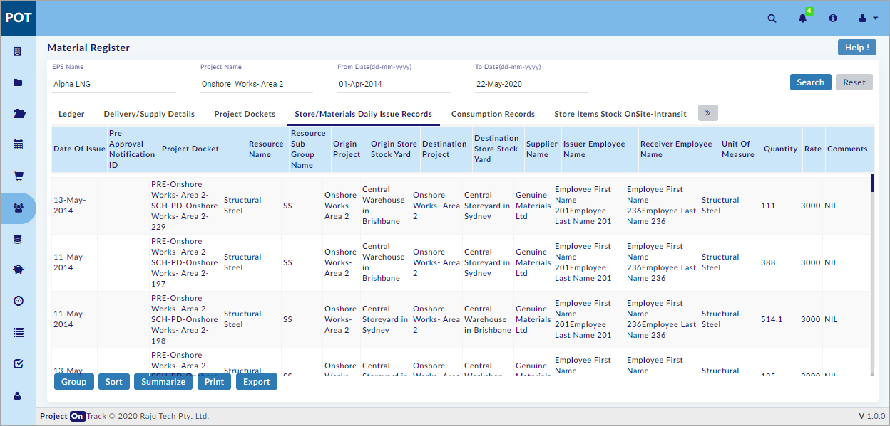
Note:
- Click Reset to reset the screen to the default view.
- Pre- Approval Notification ID selected during project docket generation is displayed in Pre- Approval Notification ID (if the same Exists).
You have successfully searched and viewed the Store/Materials Daily Issue Records.
Search and View Consumption Records:
This section helps you to search and view the Consumption Records. Details of Materials consumed through Work diary are seen auto filled here.
To search and view the Consumption Records, do the following.
- Select EPS Name or Project Name, and then select From Date and To date.
- Click Search available on the top right side of the screen.
- Select the Consumption Records tab.
- The search results are shown on the screen as shown in the figure.
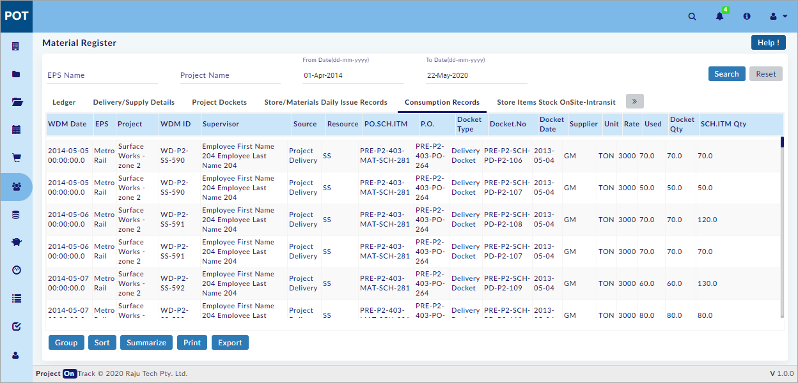
MD informed removal of 00.00.00.0. for the above. <<SS to be changed after removal>>
Note:
- Click Reset to reset the screen to the default view.
- Details of materials in Asbuilt Records – Work dairy – Approved materials are updated (auto-filled) in this tab.
You have successfully searched and viewed the Consumption Records.
Search and View Store Items Stock OnSite - Intransit:
This section helps you to search and view the Store Items Stock OnSite - Intransit. Stock and consumption details are seen date wise in this tab.
To search and view the Store Items Stock OnSite - Intransit, do the following.
- Select EPS Name or Project Name, and then select From Date and To date.
- Click Search available on the top right side of the screen.
- Select the Store Items Stock OnSite - Intransit tab.
- The search results are shown on the screen as shown in the figure.
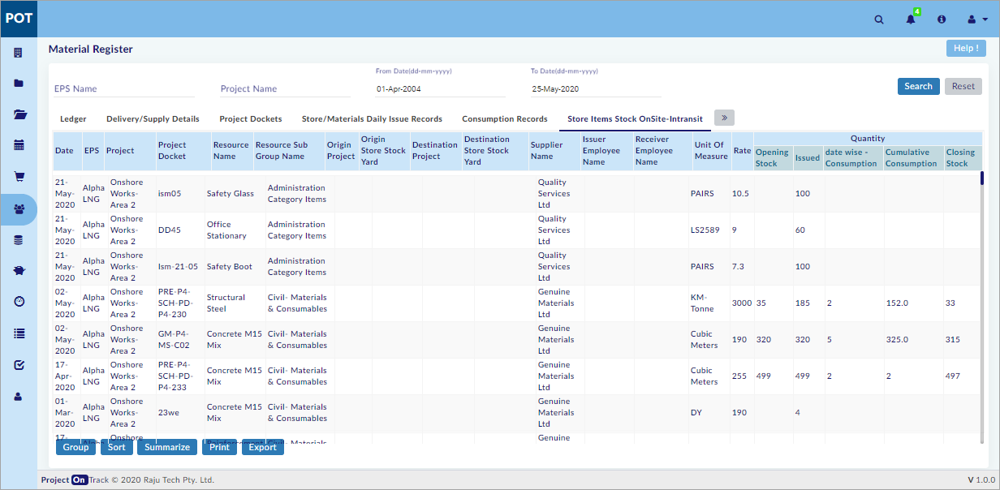
Note:
- Click Reset to reset the screen to the default view.
- Asbuilt Records – Work dairy details are displayed in Date wise – Consumption under Quantity.
- Total consumption based on schedule item ID (in days) is shown in Cumulative Consumption field.
- Tomorrow’s Opening Stock is today’s Closing Stock.
You have successfully searched and viewed the Store Items Stock OnSite - Intransit.
Search and View Materials Stock on Site - Stock Piled Items:
This section helps you to search and view the Materials Stock on Site - Stock Piled Items.
To search and view the Materials Stock on Site - Stock Piled Items, do the following.
- Select EPS Name or Project Name, and then select From Date and To date.
- Click Search available on the top right side of the screen.
- Select the Materials Stock on Site-Stock Piled Items tab.
- The search results are shown on the screen as shown in the figure.
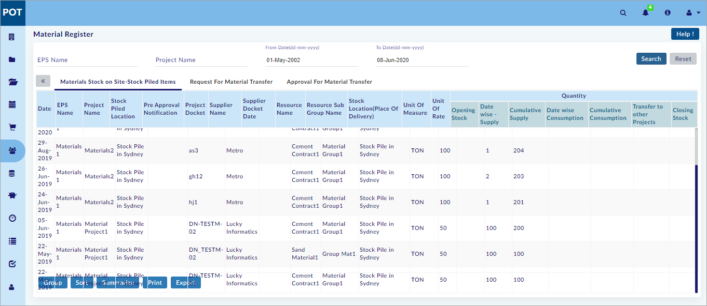
Note:
- Click Reset to reset the screen to the default view.
- Stockpile is created in Enterprise – Central Library – Ware House List by selecting Stockpile from the Category drop-down menu while creating the same.
- The created stockpile item should be used in Procurement for generating a purchase order.
- The generated purchase order should be used in Asbuilt Records – Work Dairy, for the data to be updated (auto-filled) and shown in this tab.
You have successfully searched and viewed the Materials Stock on Site - Stock Piled Items.
Search and View Request for Material Transfers:
This section helps you to search and view the Request for Material Transfers.
To search and view the Request for Material Transfers, do the following.
- Select the Request for Material Transfer tab.
- Select From Date and To date.
- Select Login User Records to search the records of the logged-in user (or select All User Records to search the records of all the users).
- Click Search available under Request for Material Transfer tab.
- The search results are shown on the screen as shown in the figure.
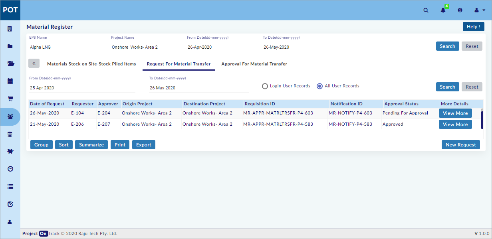
- Click to view the submitted Request for Material Transfer details.
Note:
- Login User Records is selected by default.
You have successfully searched and viewed the Request for Transfers.
Submit Request for Material Transfer:
This section helps you to submit the Request for Material Transfer. User can create the material transfer details with Approval details. A notification will be sent to the approver to approve the transfer.
To submit the Request for Material Transfer, do the following.
- Select the Request for Material Transfer tab.
- Click
 and the Requisition window opens as shown in the figure.
and the Requisition window opens as shown in the figure.
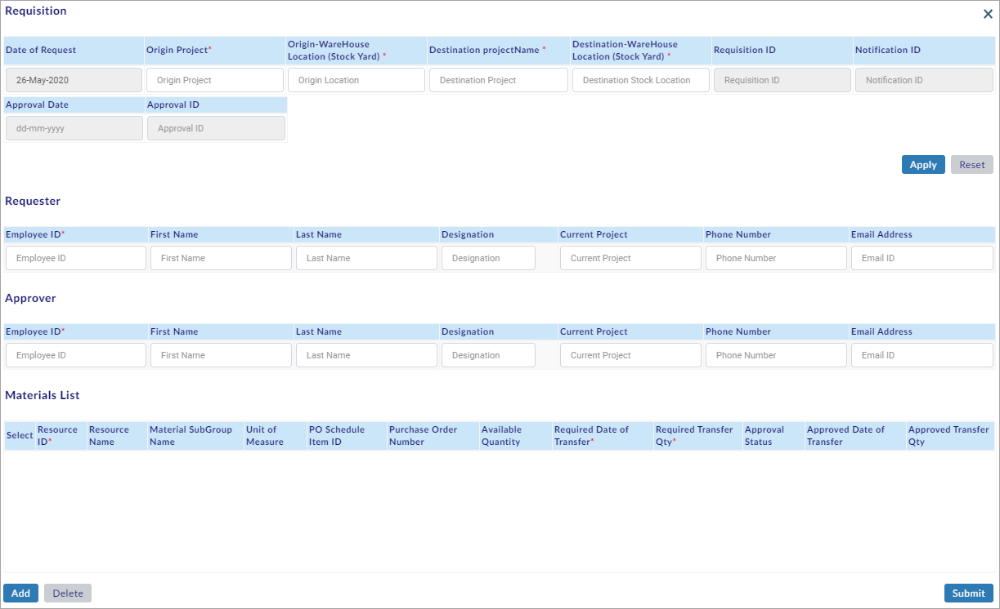
- Select Origin Project, Origin-WareHouse Location (Stock Yard), Destination Project Name, Destination-WareHouse Location (Stock Yard), and then click .
- On the Requester sub-window, select Employee ID, and the other text fields are auto-filled
- On the Approver sub-window, select Employee ID, and the other text fields are auto-filled (Select from users list assigned to the selected destination project. The selected employee is the Approver for the Request).
Note:
- Date Of Request is auto filled with the system date.
- Requisition ID, and Notification ID are auto generated after submitting Request.
- Approval Date, and Approver ID are auto-filled after completion of the Approval process.
- List of employees related to the selected origin project is displayed in Employee ID on the Requester sub-window.
- On the Materials List Sub-window, click
 and the Materials List window opens.
and the Materials List window opens. - Select the Material(s) and click
 to add Material(s) as shown in the figure.
to add Material(s) as shown in the figure.
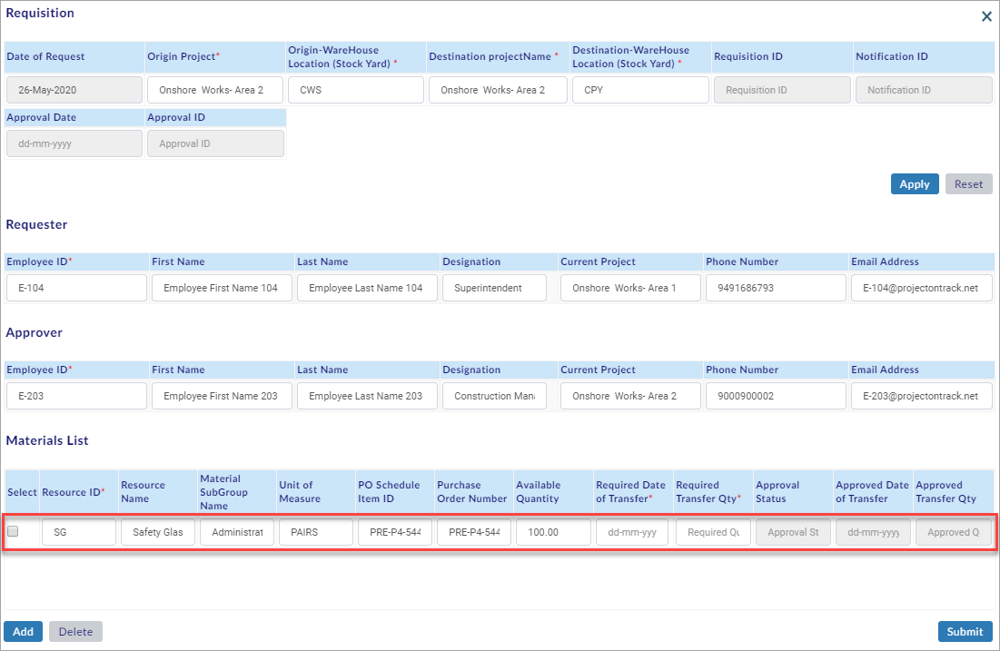
- Select Required Date of Transfer and Required Transfer Qty.
- Click
 to submit the material transfer request details.
to submit the material transfer request details.
Note:
- Select the Material(s) and click
 to delete Material(s) details.
to delete Material(s) details. - Only the materials that are authorised for internal and external transfer in Projects – Project Library - Material Transfer Restriction List are displayed in the Materials List window.
- If the selected origin and destination projects are the same it is called internal transfer.
- If the selected origin and destination projects are different it is called external transfer.
- Records should be created in the Delivery/Supply Details tab for the same to be shown in the Request for Material Transfer tab.
You have successfully submitted the Request for Material Transfer.
Search Approval for Material Transfers:
This section helps you to search the Approval for Material Transfers.
To search the Approval for Material Transfers, do the following.
- Select the Approval For Material Transfer tab.
Note:
- Submitted records under default search criteria are seen, after opening the Approval for Material Transfer tab.
- Select From Date and To date.
- Select the approval type from the Approval Type drop-down menu.
Note:
- User can select from the following, from the Approval Type drop-down menu.
- Pending For Approval
- Approved
- Rejected
- All
- Select Login User Records to search the records of the logged-in user (or select All User Records to search the records of all the users).
- Click Search available under Approval For Material Transfer tab.
- The search results are shown on the screen as shown in the figure.
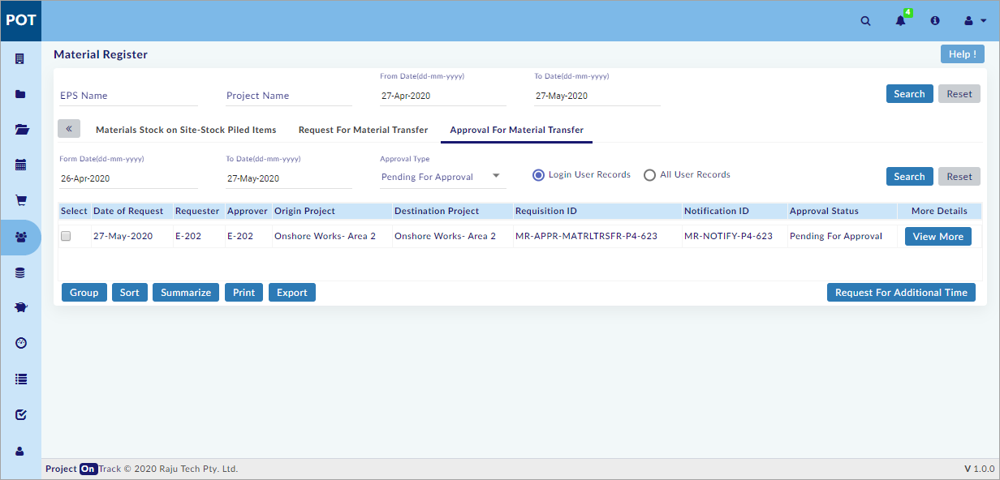
Note:
- Login User Records is selected by default.
You have successfully searched the Approval for Material Transfers.
View and Approve/Reject Request for Material Transfer:
This section helps you to View and Approve/Reject the Material Transfer Request.
To View and Approve/Reject the Material Transfer Request, do the following.
- Select the Approval For Material Transfer tab.
- Select From Date and To date.
- Select Pending For Approval internal status from the Approval Type drop-down menu.
- Select Login User Records to search the records of the logged-in user (or select All User Records to search the records of all the users).
- Click Search available under Approval For Material Transfer tab.
- The search results are shown on the screen as shown in the figure.

- Click and the Requisition window opens as shown in the figure.
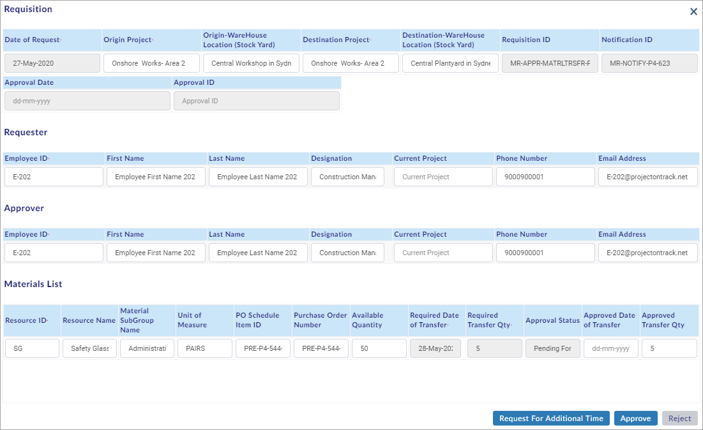
Request for Additional Time button is wire framed to the above figure. Please check.
- View the Material Transfer Request details and you can perform the following in the Requisition window:
- In case of Exceeding normal time in Projects > Project Settings > Material Transfer tab, click
 .
. - The Request For Additional Time window opens as shown in the figure.
Screenshot Required.
- On the Request For Additional Time window, select/enter the required details and click
 to request for additional time and generate a notification.
to request for additional time and generate a notification. - Select Approved Date for Transfer, Approved Transfer Qty, and then click to Approve the Material Transfer Request.
- Click to Reject the Material Transfer Request.
You have successfully viewed and Approved/Rejected the Material Transfer Request.
Created with the Personal Edition of HelpNDoc: Full-featured Help generator